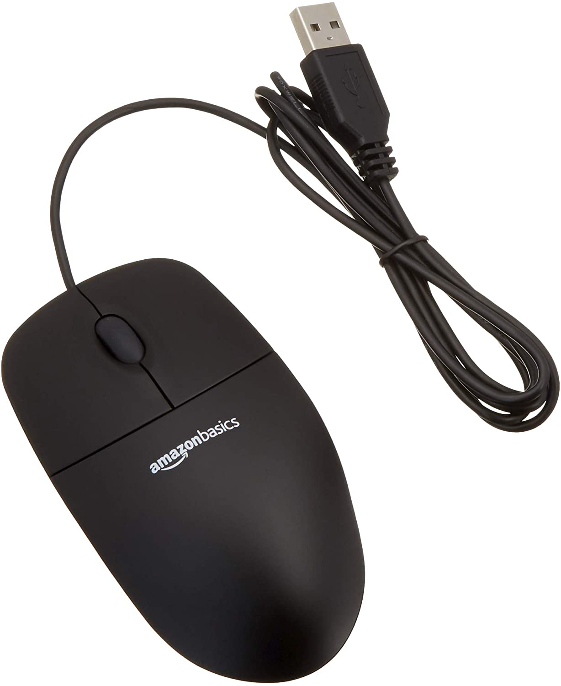
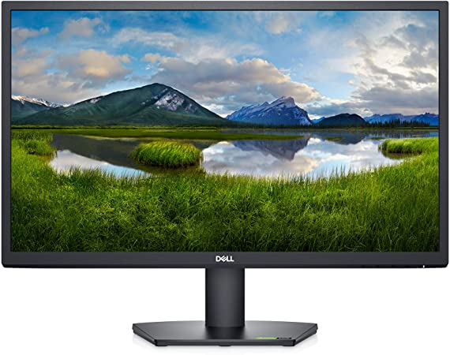
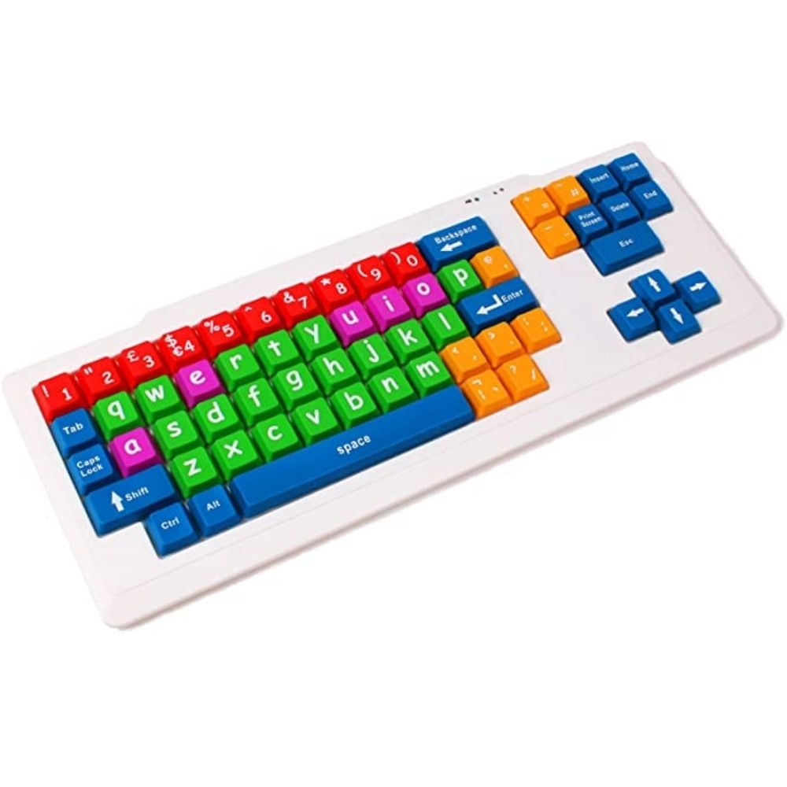
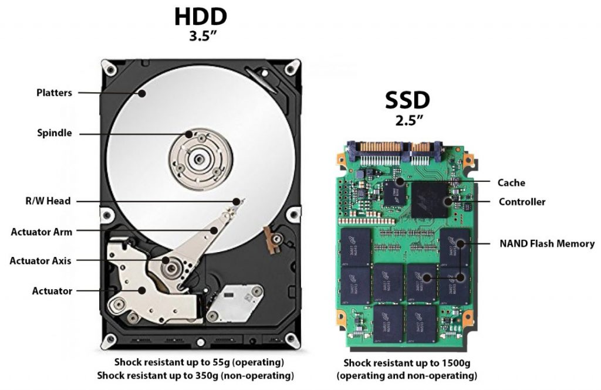
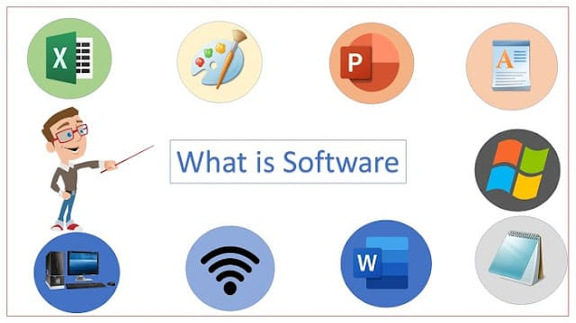

Introduction to Computer
The word Computer is derivered from the word Compute. Compute means to calculate. Computer originally was defined as a super calculator. It has the capacity to solve the complex arithmetic and scientific problems at very high speed. But nowadays in addition to handling complex arithmetic computations, Computer perferm many tasks like accepting, sorting, selecting and comparing various type of informations. They also perform arithmetic and logical operations on alphabetic, numeric and other type of informations
Therefore Computer is an electronic device, oparating under the control of instructions stored in instructions in its own memory, that can accept data(input), process them according to specified rules, produce(output) and store the results(storage) for future use.

Components of the Computer
The Computer Components are divided into two main types namely, Hardware and Software:
(a)Hardware is the touchable parts of the Compuer like Keyboard, mouse, monitor and Central processing unit(CPU). Components also are diveded into for categories which are input, processing,output and storage devices.
The following are the main Hardware components of the Compuer system:
- Mouse: is movable input devicce that lets you control a range of things on a Compuer. Most tyepes of mouse have two buttons , and some will have wheel in between the buttons. Most type of mouse connect to the Computer with a Cable, and mouse use computer's power to work. 
- Monitor: is an output devicce that displays pictures, text, icons and othe information of the Compuer 
- Keyboard: is an input device used for putting information including letters, words and numbers. You press the individual buttons when you type. 
- Central Processing Unit(CPU): is the processing devicce that acts as the brain of the Computer, cointaining all the circuitry needed to process input, store data and output results. It contained in the System Unit of the Computer.
- Storage devices: Including Hard Drive Disks, Floppy Disks, Compact Disks, USB Flash Drive, Solid state Drives(SSD) , Tapes and others. 

(b)Software: is the set of Computer programs and associated documents and data. This is in contrast to hardware,
from which the system is built and which actually performs the work. Software is divided into two types namely, Application
system and System software.

- Application software: It include all Computer program designed to carry out a specific task other than one relating to the operation of the Computer itself, typically to be used by end-users. Word processors, media players, are examples of Application Software.
- System software: is the software designed to provide a platform for other user software. Example of system software include systems like macOS, Linux, Android and Microsoft Windows.
Computer generations
| Generations | Generations timeline | Evolving Hardware |
|---|---|---|
| First generation | 1940s-1950s | Vacuum tube bassed |
| Second generation | 1950s-1960s | Transistor based |
| Third generation | 1960s-1970s | Integrated circuit based |
| Fifth generation | The present and the future | Artificial intelligence |
Similarities between Human & Compuer
| Human | Compuer |
|---|---|
| Like Human has ears, nose, eyes etc. | Has input devices like Keyboard, scanner, mouse etc |
| Like we remember things | Computer also store information |
| We recollect certain information as required | Computer als retrive informations |
| We express ourself by speech, writting etc. | It has expresses though screen, printouts etc. which all we call output |
| Whe we watch, hear, learn, certain things and anlyze | Computer can analyze information |
| The place where we store and analyze | Computer brain is known as CPU whe it analyze information |
Use of Compuers
| Fieds | Uses |
|---|---|
| Education | In schools and college to teache student digitally |
| Hospital | It is used to create Database of patients with their treatment and medicine records |
| Business | Compuer has made it easier to run , manage, and grow business. Google, Facebook, and Amazon are greet example of that |
| Banking | THey use Computer to store customer's data, process money deposit, and withdraw requests. Machines help banks in reducing infrastructure costs and improve efficiency. |